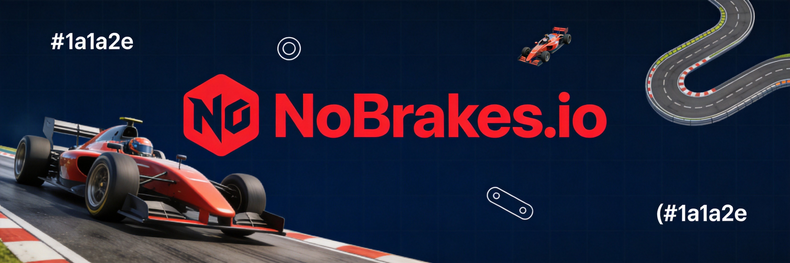
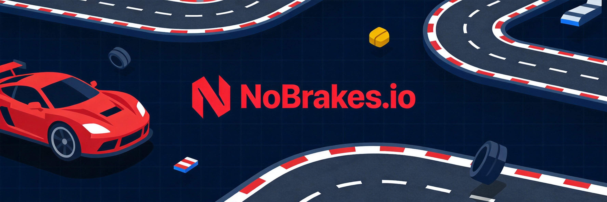
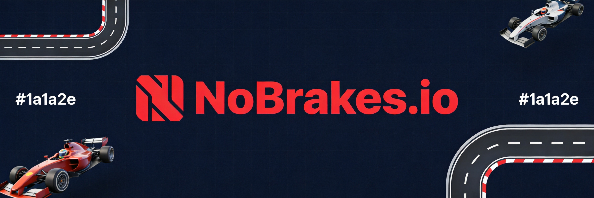

Racing games live and die by one thing: feel. The way a car responds to your inputs, the weight of a drift, the satisfaction of threading through a corner at the absolute edge of control. NoBrakes.io isn't a simulation — it's an arcade racer in your browser — but the principles are the same. This guide breaks down everything from the moment you hit the gas to crossing the finish line first, every single time.
🎯 Game Basics

What Is NoBrakes.io?
NoBrakes.io is a multiplayer racing .io game where you compete against other players on track-based circuits. Unlike pure racing simulators, it features boost pickups, map hazards, and a forgiving but still skill-demanding physics model. The name is the entire strategy — brake less, go faster, trust your reflexes.
Objective
Complete laps around the track as fast as possible. The first player to finish the required number of laps wins. In race mode, it's pure placement — where you finish relative to others matters. Some modes are time-attack where you're racing against the clock.
Game Modes
- Solo Race — Race against the clock to set your best time. No opponents, no pressure.
- Multiplayer Race — Compete against real players. First across the finish line wins.
- Tournament — Multiple races with points accumulated. Winner is whoever has the most points at the end.
🎮 Controls & Physics
Keyboard Controls
- W / Up Arrow — Accelerate
- S / Down Arrow — Brake / Reverse
- A / Left Arrow — Steer left
- D / Right Arrow — Steer right
- Spacebar — Activate boost (when available)
Understanding the Physics
NoBrakes.io uses an arcade physics model, which means the cars have more grip and responsiveness than a realistic simulation would. That said, the game still rewards good technique. Cars have momentum — they don't stop on a dime. At high speed, steering inputs are more about gradual corrections than sharp turns. Fight your instinct to overcorrect; smooth inputs win races.
The fastest way to lose a race in NoBrakes.io is to hit a wall at full speed. High velocity + wall = massive time loss from the bounce-back. Always leave yourself a margin for corners.
🏁 Drift Mechanics
What Is Drifting?
In NoBrakes.io, drifting is the art of sliding through corners while maintaining speed rather than braking and cutting the apex. When you drift, your car rotates sideways while maintaining forward momentum. Done right, you exit the corner faster than someone who braked. Done wrong, you spin out and lose everything.
Initiating a Drift
The standard drift initiation: turn into the corner while tapping the brake briefly. This shifts the car's weight, breaks rear traction, and starts the slide. Alternatively, you can tap the handbrake (if your car has one) for a more aggressive drift onset.
Managing the Slide
Once you're sliding, counter-steer to control the angle. Point your front wheels toward where you want to go, not where you're sliding. The goal is a controlled slide — you're not just along for the ride, you're actively managing the car's rotation. It takes practice to feel when you're in control versus when you're about to spin.
Drift Exit
As the corner straightens out, gently ease off the counter-steer to let the car straighten. Slam it back straight and you'll over-rotate and spin. Ease into it and you accelerate out of the corner at maximum speed.
When to Drift vs. Brake
Not every corner needs a drift. Tight hairpins benefit from drifting because braking would kill too much speed. Wide sweeping corners are often faster with clean braking and smooth cornering. Here's the rule: if you can brake less and slide through faster than braking clean, drift it. If braking clean is faster, don't force the drift.
🗺️ Track Strategy
Know the Track
Before you race to win, race to learn. Run a few solo laps to memorize the corner sequence, identify which corners are tight, and spot the fastest racing line. The racing line is the smoothest path through the track — it minimizes steering input and keeps your speed as high as possible through the entire lap.
Corner Types
- Hairpin — Sharp 90°+ corners. Requires heavy braking and tight steering. Often best as a drift corner.
- Chicane — Quick S-curve. Requires light braking and fast steering inputs. Momentum is key here.
- Sweeper — Long, gradual corner. Can be taken at high speed with minimal braking if you carry the right line.
- Hairpin + Exit — The trickiest corners: a hairpin followed by a straight. Exit speed matters more than entry speed. Drift it.
Boost Pickups
Boost pads are scattered across most tracks. Hit them at full speed — approaching a boost pad slowly wastes the potential. The boost itself is a straight-line acceleration assist. Plan your boost usage: use it on long straights or just after a corner exit to maximize the speed gain.
Collision Awareness
In multiplayer races, other players are hazards too. A collision at full speed sends both cars spinning. Give aggressive racers space, but also use their aggression against them — force them into corners too fast and watch them spin out.

💡 Pro Tips
- Practice in solo first. Learn the track at your own pace before fighting real opponents. You'll be faster when you hit multiplayer.
- Watch the ghost. Many racing .io games show a ghost of your best lap. Use it to see where you're losing time.
- Consistency beats one fast lap. A clean lap with no mistakes will beat a lap with one perfect corner but three mediocre ones. Focus on not making errors first.
- Brake early, accelerate late. The golden rule of racing. Brake before the corner, hit the apex, and get on the throttle as early as possible on the exit.
- Upgrade your car. NoBrakes.io has an upgrade system. Better acceleration, higher top speed, and improved handling make a measurable difference.

❓ Frequently Asked Questions
Q: How do I get better at drifting in NoBrakes.io?
A: Practice in solo mode on tracks with clear hairpin corners. Start by braking into the corner, then gradually reduce braking and increase drift angle. The goal is to initiate the drift with minimal braking as you get more comfortable.
Q: Are there car upgrades in NoBrakes.io?
A: Yes, the game features an upgrade system where you can improve acceleration, top speed, handling, and boost efficiency. Upgrades require coins earned from races.
Q: What's the best way to use boost pickups?
A: Hit boost pads at maximum speed for the best effect. Plan to use boosts on long straights or immediately after corners to maximize acceleration out of turns. Avoid using boost into corners — you'll go wide.
Q: Does NoBrakes.io have a ranked mode?
A: Many versions of NoBrakes.io include a tournament or ranked mode where placement determines your ranking. Check the game's current mode list for availability.
Q: Can I customize my car in NoBrakes.io?
A: Yes, most versions include cosmetic customization including colors, patterns, and decals. Some are unlocked through progression, others through purchase.
Q: How many laps do I need to complete in a race?
A: The lap count varies by game mode and server settings. Standard races typically require 3-5 laps. Tournament modes may have different requirements.
Q: Does collision with other cars cause damage?
A> Yes, collisions slow you down significantly and can cause spins. In multiplayer, avoid contact when possible and use other players' mistakes to your advantage.
NoBrakes.io rewards the patient and punishes the reckless. Learn your tracks, master the drift, and remember — sometimes the fastest way forward is to brake first. Or don't. That's the point.